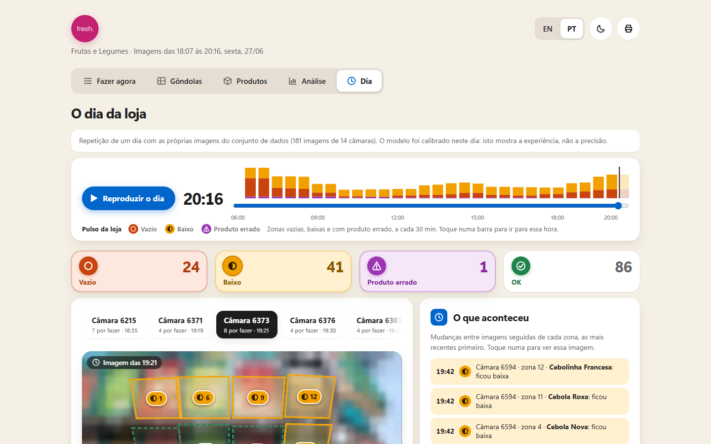

Repor
Restock.
Sensei's ceiling cameras, turned into one to‑do list.

Camera 6215
The banana trays are empty. Two banana crates hold oranges.
The camera already saw it.

Restock.
Swap it back.
Leave it.
Each shelf area, cropped straight on.
Empty, half or full? Right product?
One clear task. Unsure? Check by eye.
1.41/2
points per area on held-out late-day pictures, scored on our AI-made answer key.
99%
of empty shelves caught.
On a brand-new camera, it finds about 1 wrong product in 4 until calibrated.
One CPU core. No GPU. About $3 a month for 14 cameras.
All we need: a frame feed and one contact.